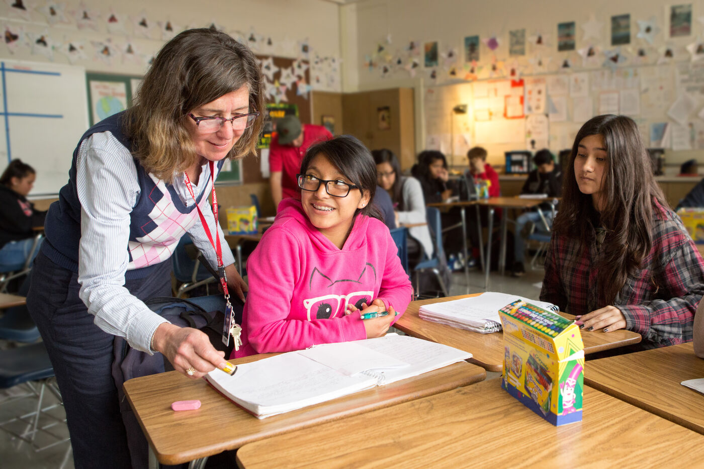

Classrooms are complicated and often hectic environments. At any given time, there could be a dozen students struggling with a task, five students ready to move on, and a handful of others at various other levels of productivity or well-being. It is up to the teacher to read the room and make quick decisions - up to 1,500 per day - on the next move (Klein, 2021). These decisions are mostly made in the moment with whatever data they can recall and whatever information they can glean from their surroundings.

Many other professions have similarly hectic and high pressure environments, such as emergency rooms, 24/7 call centers, and fighter jet cockpits. The difference is that the humans operating in these environments increasingly have automated, ambient systems feeding them intelligence so they can make well-informed decisions in realtime based on data and telemetrics; meanwhile teachers are still mostly on their own.
The first 1:22 of this video provides a nice succinct overview of what an Ambient Intelligent Assistance does and how it uses a mesh of local devices to collect data and serve it up to the user (Arm, n.d.).
This forecast will explore the likelihood, benefits, and risks of systems like these becoming available to teachers and what it might mean for teaching as a profession.
The examples below provide evidence that an Ambient Classroom Assistant is feasible. One of the fastest growing use cases in health care is ambient scribing tools that track conversations and other data inputs to help doctors and health care workers accurately track information in realtime (VoiceboxMD, n.d.).
[Your words here.] Cognitive load theory (Sweller, 1988), pointed at the teacher instead of the learner. The field has spent forty years on the student's working memory and almost none on the working memory of the person running the room (Feldon, 2007).
Anchor it on the formative assessment moment: you watch a kid finally get it at 10:40. You either stop the lesson to record it or you trust that you will remember at 3pm. Nobody remembers at 3pm. The assessment happened and the evidence evaporated.
[Your words here.] Always listening is the least interesting and most legally fraught way to build this. Four layers, each with a different privacy cost and a different distance from today.
Talk-time ratios, questioning patterns, who has not spoken. Decibel-only is nearly free; transcription is the hardest sell in a room full of minors.
Which prompt is open, where responses stalled, how long a task actually took. This already exists in the systems schools have bought.
Occupancy, temperature, air quality, light. No personal data at all, and off-the-shelf hardware. The dull layer that quietly explains the 2pm slump.
Posture, movement density, hand-raising, where the teacher stood. Research prototypes only (Ahuja et al., 2019), and the layer boards will refuse longest.
[Your words here.] Three things hold it back: the signals live in systems that do not talk to each other, continuous multimodal capture is too slow and too expensive to send to the cloud, and nobody has the institutional appetite.
Three things resolve it: inference that runs on the device and discards the raw signal, small models trained on pedagogical patterns rather than general language, and sensor standards that let one assistant read a room it did not ship with.
[Your words here.] Every prompt we have discussed has to land somewhere, and a phone in a teacher's hand is a teacher looking at a phone. The entire public argument about glasses in schools assumes the student is wearing them. Flip it.
[Your words here.] On-device processing protects students. It does nothing for teachers, because the metadata is the surveillance. A system can discard every second of audio and still produce a permanent record of how long you talked, where you stood, and who you never got to.
The union objection is not recording. It is continuous derived metrics about a professional, generated by a system that professional did not choose.
Board AI policy written by procurement rather than by academic integrity. Wifi specified per room. A vendor shipping processing that never leaves the building.
Teachers buying their own glasses, the way they bought their own smartphones a decade before any board had a policy.
Collective agreement language about derived classroom metrics. The first grievance. A classroom talk analytics product moving from post-lesson review (Demszky et al., 2024) to live, in-lesson prompting.
A serious breach involving classroom audio. A province banning capture outright. Glasses stalling a second time the way they did after 2013 (Lardinois, 2015). Or the simplest one: the cost per classroom never pencils out.
You were told at the top of this page. You probably forgot inside of a minute. That is not a trick, it is the mechanism: every ambient system arrives with a notice nobody finishes reading.
Keep reading.
Still reading.
Notice what just happened there. Nobody measured your attention. A machine decided what attention looks like, named it, scored it out of 100, and showed you the number as though it were a fact about you. Those three words are my inventions. So are the formulas. That is the part worth worrying about, and it is the part that will arrive without anyone voting on it.
INTEGRITY: everything above was computed in your browser. No network request, no storage, no analytics, no third-party fonts. Refresh and it is gone. The photo is served from this site, and the video loads from YouTube only if you press play. The source is public, and you are welcome to check.
Imagine you could see this for a reading you assigned. Not a quiz score afterwards, but which paragraphs your students moved through quickly and which ones they stayed with. Would you use it to send them back to the part they skipped?
And the harder half: imagine someone could see the same map of how you taught, and you were not the one who decided which parts got measured.
I personally believe that some version of an always-on classroom assistant is coming, and sooner than most of us expect. A lot of adjacent professions already have one. That part I am fairly confident about.
I am much less confident it will be good for education. Some versions I would welcome in my son's Grade 6 classroom tomorrow. Others I would fight. The difference comes down to design decisions nobody is making in public yet.
So this is a forecast rather than a pitch. I am interested in it precisely because it is probably coming in some form, and because the form is still open. The time to interrogate a technology is while its shape is undecided, not after the purchase orders go out.
[Your words here.] Short return to the caveat, then the question.
Looking at the four input layers: which one would you accept in your own classroom tomorrow, and which one would you refuse outright? I am more interested in where you draw the line than whether you draw it.